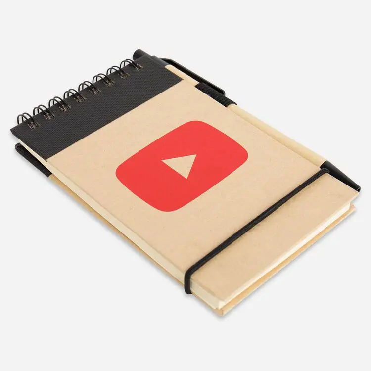
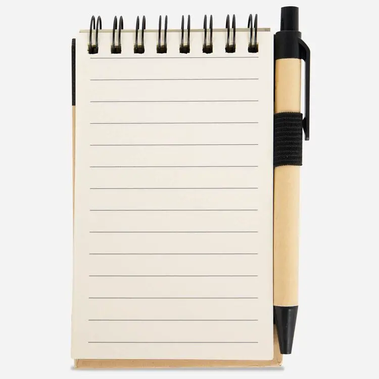

YouTube Jotter Task Pad
A sustainable way to take notes. This reporter-size YouTube notebook has a recycled cardboard cover and a matching pen with a recycled cardboard barrel that fits in the elastic pen loop. 1% of your purchase goes to nonprofits who protect our Earth.
- Companies: Google, Robertson Marketing
- Release Year: 2020
- ID: GGOEYOLB151999
- Price: $3